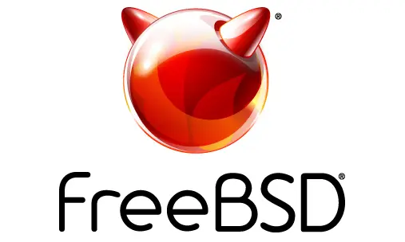

Apa itu FreeBSD?
FreeBSD adalah salah satu turunan dari Berkeley Software Distribution (BSD) dan merupakan sistem operasi penuh.
"The BSD license is the ultimate open source license: do whatever you want with it, just don't sue us."
— Marshall Kirk McKusick, pemimpin riset BSD
Pada artikel ini, kita akan bahas tentang BSD terutama FreeBSD, membuat package di FreeBSD dan pengaruhnya dalam terciptanya MacOS.
Berkeley Software Distribution

Jadi apa itu Linux? Linux adalah kernel yang digunakan dalam sistem operasi GNU/Linux. Yang dimaksud dari kernel adalah inti dari sistem operasi. Kernel bertugas untuk mengatur semua sumber daya yang ada di komputer, seperti CPU, RAM, dan komunikasi perangkat keras lainnya.
Linux diciptakan oleh Linus Torvalds pada tahun 1991. Ia awalnya membuat Linux sebagai proyek pribadi untuk membuat sistem operasi yang Free dan Open Source. Maksud dari Open Source di sini adalah kode sumber dari Linux dapat diakses, dimodifikasi, dan didistribusikan oleh siapa saja.
Baca Juga: Git: Version Control andalah programmer
Unix
Linux terinspirasi dari sistem operasi Unix. Unix adalah sistem operasi yang tidak bersifat open source. Artinya kode sumber Unix tidak dapat dilihat oleh orang lain, dan merupakan hak cipta sepenuhnya dipegang oleh AT&T.
Linux mirip dengan Unix karena memiliki filosofi yang mirip yaitu "Everything is a File". Yang lebih membuatnya mirip dengan Unix adalah filesystemnya yang menggunakan system hierarki

Baca Juga: Terminal sang kawan programmer
Linux menggunakan Lisensi GNU General Public License (GPL) version 2. Mengartikan bahwa sistem yang dibuat dengan source code Linux bebas diubah, dimodifikasi secara gratis tetapi pengguna lain berhak melihat kembali source code dari hasil modifikasinya. Tidak boleh dibuat Closed Source.
Dampak Linux
Linux menjadi pondasi besar internet di dunia. lebih dari 95% server di dunia menggunakan Linux. Kenapa harus linux? karena linux bersifat open source sehingga setiap ada celah keamanan, komunitas linux akan memperbaikinya dengan cepat.
Contoh yang paling sering digunakan untuk server adalah distribusi debian. Debian dikenal sebagai distribusi linux yang stabil dan mudah dipahami, terlebih lagi karena package managernya memiliki komunitas yang sangat luas.
Linux adalah contoh paling nyata dalam Open Source project yang benar-benar sukses. Jika kau pikir kau tidak menggunakan linux, bagaimana dengan HP mu?
Android

Android adalah sistem operasi yang dibuat di atas kernel Linux. Android menjadi sistem operasi yang paling sering digunakan di dunia. Siapa sih orang yang tidak pernah menggunakan Android?
Seperti yang kukatakan sebelumnya, Linux Kernel memiliki lisensi yang mengharuskan orang-orang berhak melihat source code jika menggunakannya. Karena itu juga Android memiliki banyak versi ColorOS, One UI, HyperOS, Realme UI dan masih banyak lagi.
Linux = Operating System?
Ini adalah hal yang paling sering disalahpahami oleh orang-orang. Linux sebenarnya bukanlah Sistem Operasi, Ia adalah Kernel yang menjadi inti dari sistem operasi. Contohnya saja Windows yang menggunakan Windows NT sebagai kernelnya.
Linux sering dianggap operating system karena distribusi yang membuatnya menjadi sistem operasi penuh seperti Arch, Debian dan Fedora. Linux bisa dianggap sebagai sistem operasi yang penuh jika ia bergabung dengan GNU. GNU adalah sistem operasinya sementara Linux adalah Kernel atau inti. Oleh sebab itu Free Open Source Software sering menyebutnya sebagai GNU/Linux.
Baca Juga: Arch User Repository Experience
Kesimpulan
Anggapan bahwa Linux adalah sistem operasi merupakan hal yang umum bagi komunitasnya. Linux menjadi fondasi besar dalam perkembangan internet sampai-sampai 95% server diatasi olehnya. Jika ingin mempelajari Linux lebih dalam, bisa cek video berikut: Link ke Video.